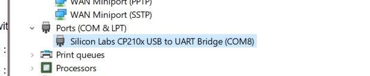

Esp32 and MicroPython
“Flashing MicroPython to the Esp32 for Windows”
Flashing MicroPython to Esp32
pip install esptool
Connect your Esp32 to your computer and find its port number. For Windows, use device manager (either ask Cortana for it or for hotkeys user: Win_btn + X)
under “Ports (COM & LPT)”

as you can see, mine is on COM8
run the following in terminal, replacing “COM8” with whatever port yours is connected to
esptool.py --chip esp32 --port COM8 erase_flash
Now, get the new firmware flash here: MicroPython for Esp32 I’ve downloaded the very first “Generic” one but you can choose whichever that fits your requirement.
Note: Some of the firwares only have WiFi support or only Bluetooth support, so take note
After downloading the file, navigate your terminal to the location of the downloaded file and run the following
esptool.py --chip esp32 --port COM8 --baud 460800 write_flash -z 0x1000 esp32-idf3-20191105-v1.11-558-gd209f9ebe.bin
Similarly, change “COM8” to your own port number and “esp32-idf3-20191105-v1.11-558-gd209f9ebe.bin” to the firmware you download.
Now for testing!
REPL on Esp32 MicroPython
on windows terminal install rshell
pip install rshell
then run repl in rshell
rshell
connect serial COM8
repl
again, change COM8 to your port number. If everything works, the MicroPython interpreter will show up! Congratz!
Flashing scripts to Esp32
To have a permanent script that runs everytime the Esp32 boots, we will use another package. Run the following in terminal.
pip install ampy
now create a “main.py” file somewhere and navigate your terminal to it. We are going to use pin 21 to blink an LED so add the following code in main.py
from machine import Pin
import time
p21 = Pin(21, Pin.OUT)
while True:
p21.on()
time.sleep_ms(500)
p21.off()
time.sleep_ms(500)
Save the file and in your terminal, run the following
ampy --port COM8 put main.py
yet again, change COM8 to your own port number.
Connect pin 21 to a resistor and the resistor to the positive leg of the LED and the negative leg of the LED to GND.
Reset your Esp32 and it should blink! Congratz!